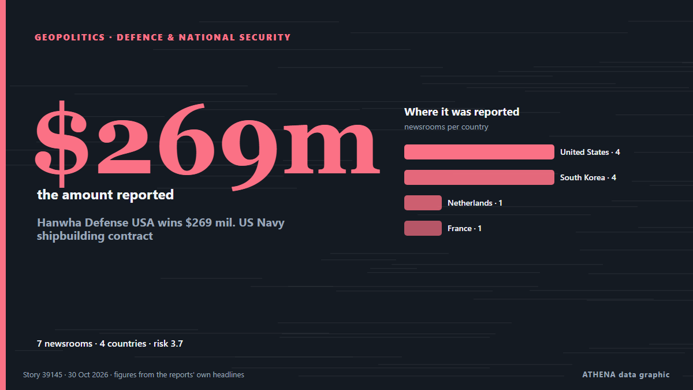

Defensa y seguridad nacional
| 18 oct | 0 |
|---|---|
| 19 oct | 1 |
| 20 oct | 1 |
| 21 oct | 0 |
| 22 oct | 1 |
| 23 oct | 1 |
| 24 oct | 2 |
| 25 oct | 0 |
| 26 oct | 2 |
| 27 oct | 6 |
| 28 oct | 2 |
| 29 oct | 6 |
| 30 oct | 2 |
| 31 oct | 0 |
Los titulares se muestran en inglés, tal como se publicaron.

Hanwha Defense USA wins $269 mil. US Navy shipbuilding contract
Hanwha Defense USA (HDUSA), a subsidiary of South Korea's Hanwha Aerospace Co., has secured a $269 million contract to build a medium landing ship (LSM) for the U.S. de The Korea Times
US and Japan, long alarmed by China’s aggression, agree to establish missile-production facility
CEBU, Philippines: The United States and Japan have agreed to establish a Japanese facility for the joint production of advanced medium-range air-to-air missiles, the Japanese defense chief said late… de Arab News
Australia considers Iron Dome-style missile shield
Discussions are being held over the availability of the US Patriot missile defence system and Israeli-made Rafael interceptors. de Free Malaysia Today
Border restriction harm Iraq national interests: Iraqi MP
Al-Aboudi made the remarks in an interview with Al-Iraqiya News, saying the visits were part of the government’s efforts to deepen partnerships with neighboring and influential countries in pursuit… de Kurdistan24 (English)
Taiwan flags ‘obvious’ threat from 50 Chinese vessels in wide sweep of waters
China has more than 50 navy and other official vessels operating in a wide swath of… de BusinessWorld
Ethiopia Says It Got 12 Russian Fighter Jets
Prime Minister Abiy Ahmed says Ethiopia received 12 Su-35 fighters from Russia on 28 October. de The Rio Times
Robotic turrets operated by private air defence units have destroyed over 60 targets
Brave1 reports that robotic systems deployed by non-state anti-aircraft brigades have successfully shot down dozens of threats, including missiles and drones. de Ukrainska Pravda (English)
Iran’s top security official meets with Leader Ayat. Khamenei
Tehran, IRNA – Secretary of the Supreme National Security Council Major General Mohsen Rezaei says Washington’s inability to provide security guarantees has become evident, stressing that security in… de IRNA (English)
Canada, UAE sign economic partnership deal, launch strategic partnership
Prime minister, crown prince agree to stay in close contact after 1st visit by Abu Dhabi’s leader to Canada. de Anadolu Agency (English)
Saudi civil defence issues 'potential danger' warning for Mecca, Jeddah
Warning was activated over unspecified danger in Najran before authorities later announced all-clear. de Anadolu Agency (English)
Beijing says Philippines ‘erected obstacles’ to ASEAN attendance
China accused the Philippines of placing barriers to its participation in the ASEAN Defense Ministers’ Meeting in Manila, which was attended by a Chinese embassy attache instead of higher-ranking… de Arab News
Estonia Plans 150 Bunkers Along Border With Russia
The installations will form the so-called Baltic Defense Line, an agreement that Estonia, Latvia and Lithuania announced in 2024 to build a series of bunkers along their borders with Russia and… de The Moscow Times
Poland and UK sign Warsaw Defence Plan to “deter Russian threats”
"Poland is one of the UK’s closest allies," says the British defence secretary. de Notes from Poland
UK Government aims to spend 3% of GDP on defense by 2030, Chancellor says, but not everyone's convinced
The UK Government will aim to spend 3% of economic output on defense by 2030, and will plot a course for the target at next year's spending review, Chancellor of the Exchequer John Healey has said. de MercoPress
Latin American Pulse for Wednesday, October 28, 2026
Latin America’s mood today: Brazil’s post-election nerves meet corporate calm, while Mexico City sinks and Chile shrugs. de The Rio Times
Pentagon designates Confucius Institutes in US a national security threat
Washington has long accused Confucius Institutes of being Chinese propaganda tools. de The Straits Times
Hegseth Proposes ‘Ambitious’ US-ASEAN Defense Framework at Philippine Summit
As the Iran war strains US military readiness and tension rises with China, the Pentagon said Hegseth's attendance at the gathering in the Philippine province of Cebu would reaffirm Washington's… de NDTV
Zelensky Welcomes €500M Dutch Military Package as Work Begins on ‘Bliksem’ Air-Defense Project
On Wednesday, Oct. 28, President Volodymyr Zelensky arrived in the Netherlands for talks on air defense, defense cooperation, and economic ties. de Kyiv Post
Russia builds highly efficient fishing fleet — Putin
The head of state noted that such high-capacity ships were not built even by the Soviet Union. de TASS (English)